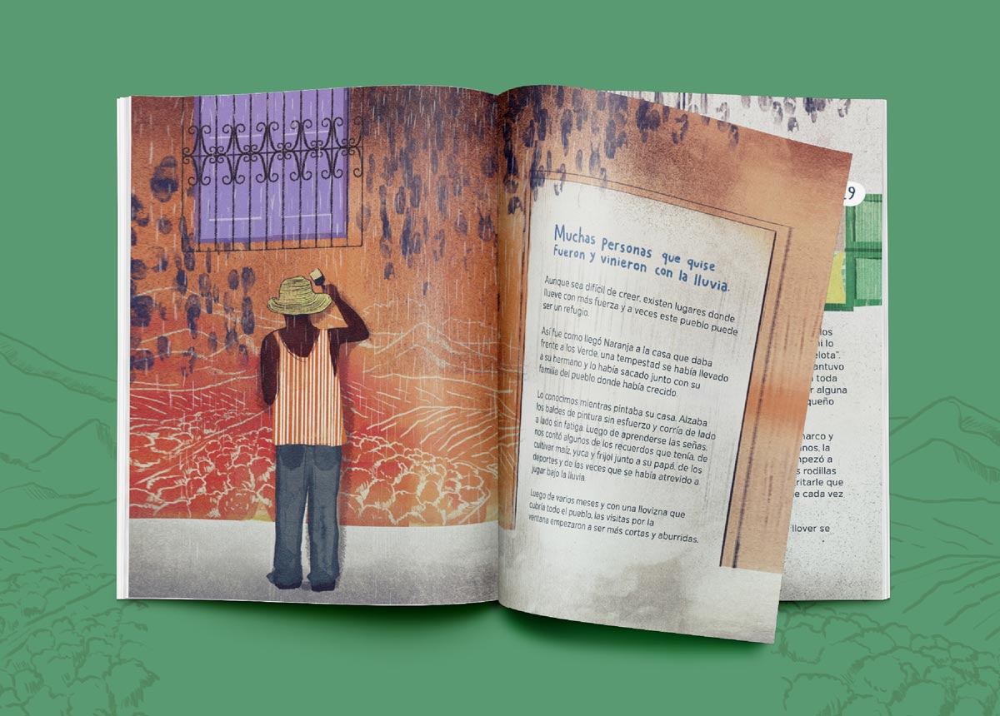
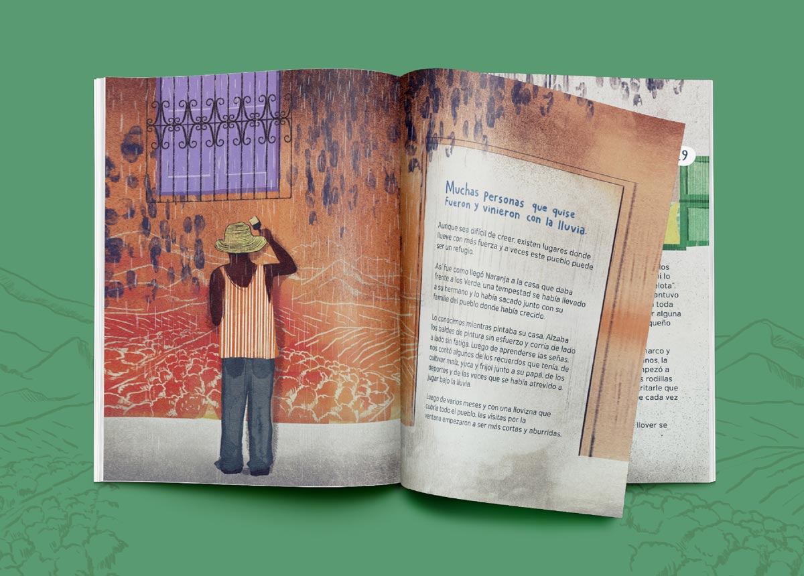
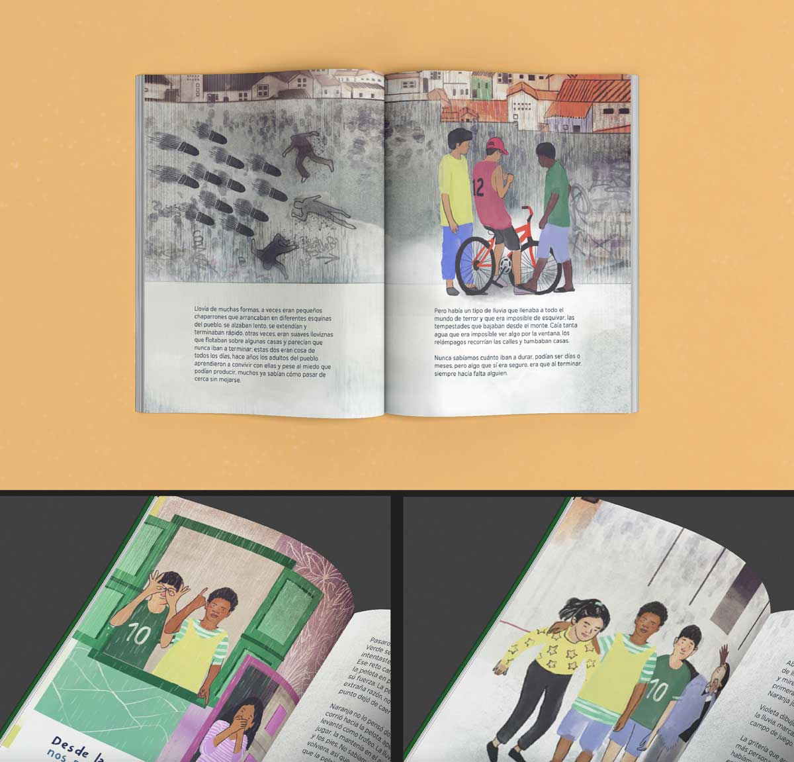
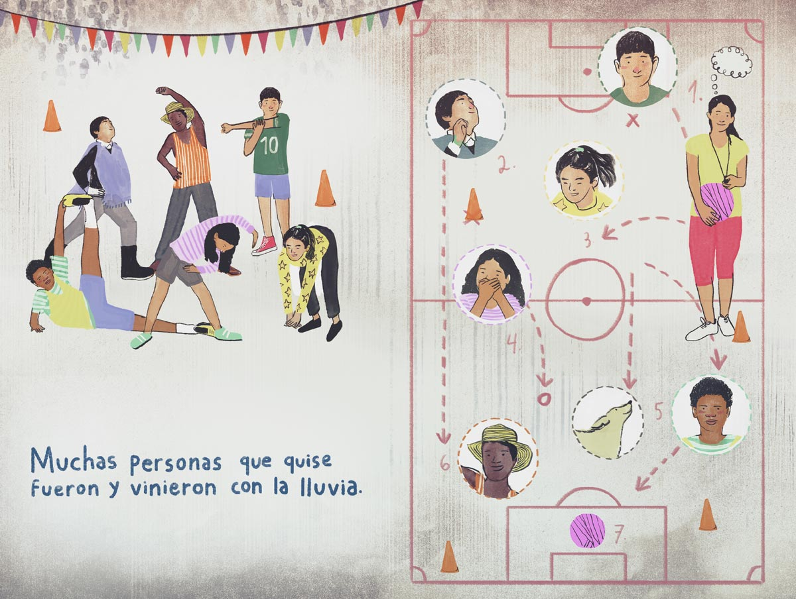
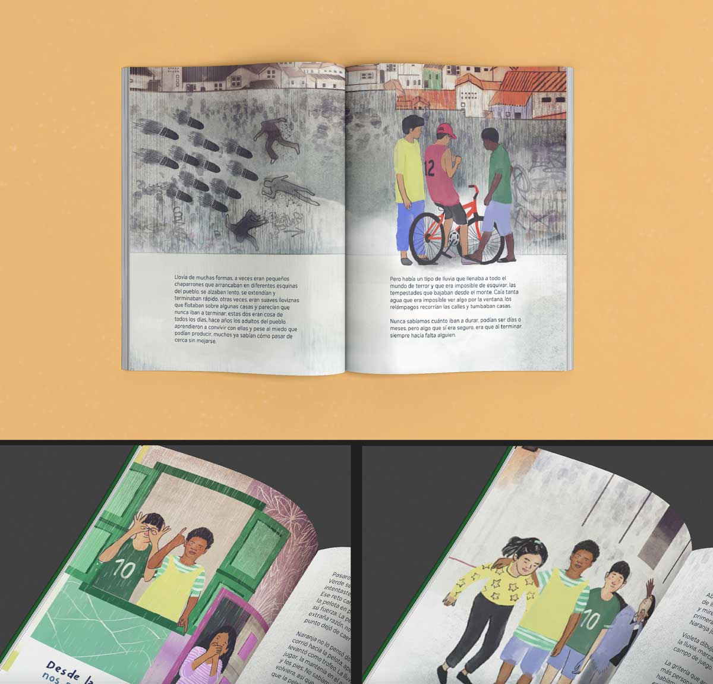
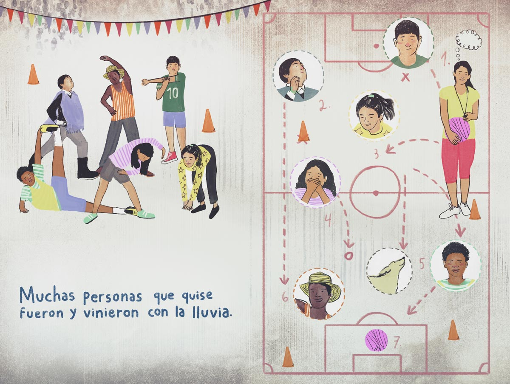
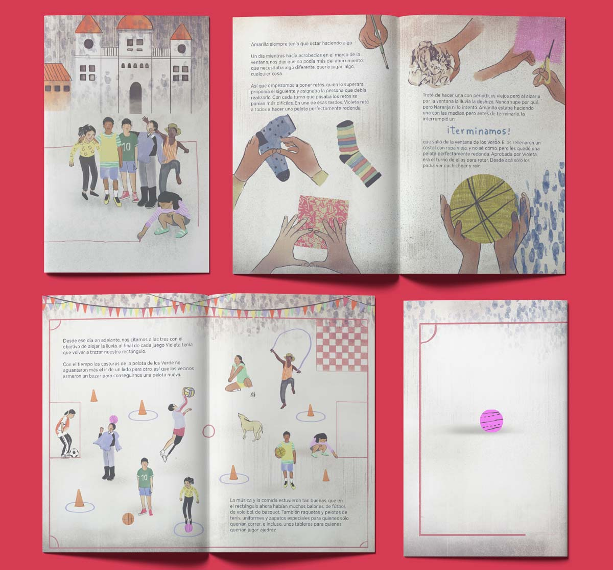
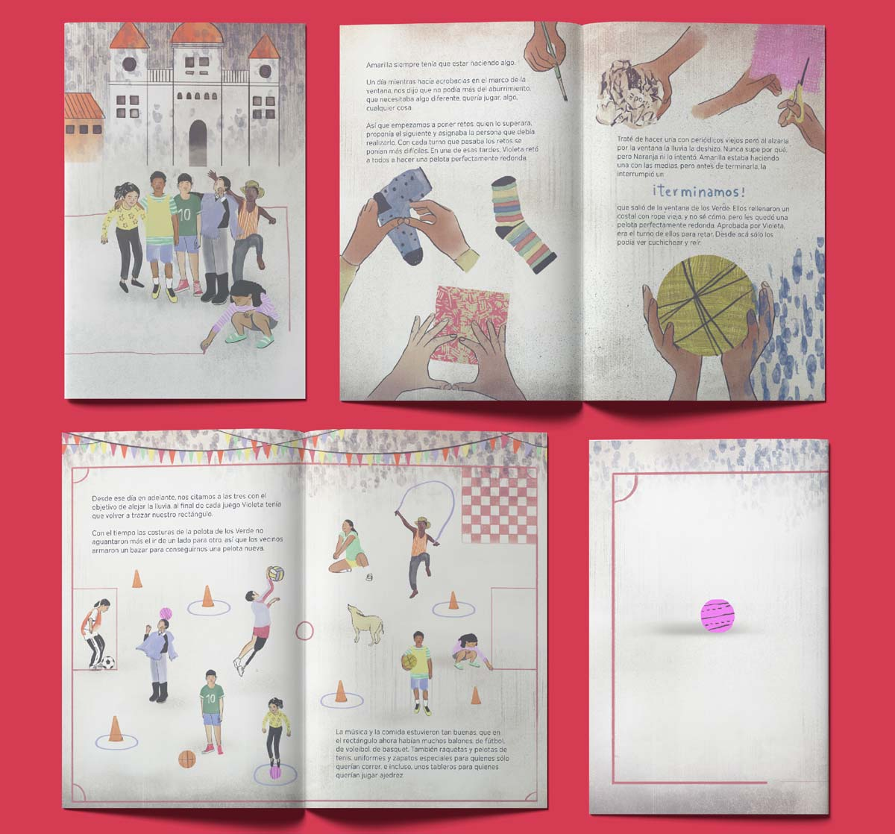

No salgas que está lloviendo
> Diseño editorial

 

 



 

Sobre el proyecto
"No salgas que está lloviendo" es una historia que escribimos, ilustramos y diagramamos a finales del 2021, para unir en un sólo relato las diferentes voces de las personas participantes del Programa Deporte Para El Desarrollo implementado por la Agencia Alemana de Cooperación Internacional GIZ, con el propósito de reconocer su labor, hablar sobre los procesos de aprendizaje, la resolución de conflictos y recuperación del tejido social en los que el deporte se convierte en un facilitador.
En un pequeño pueblo ficticio donde nunca ha parado de llover se entretejen varias historias que realmente sucedieron, construidas a partir de los relatos compartidos por formadoras y formadores, por los niños, niñas y jóvenes de todo el territorio nacional que han encontrado en el deporte un refugio y un espacio para el crecimiento personal y social, un espacio para el encuentro que les ha permitió una vida diferente a la ofrecida por el conflicto armado.
La lluvia nos permitió crear un escenario común entre las historias y lxs lectores, uno en el que podíamos hablar de la omnipresencia de la violencia en los territorios y todo lo que sigue sucediendo pese a ella, donde practicar desporte se convierte en un espacio de resistencia.
Espacios de juego que nacen apartir de tizas, pelotas hechas con trapos y medias viejas, impulsados por los y las entrenadoras que a pesar de todo siguen allí, un lugar para que las comunidades se encuentran en el campo de juego.
Acerca del proyecto
Cliente: GIZ
Año: 2021
Productos entregados: 1 libro álbum, 1 libro recopilatorio de todas las historias que participaron